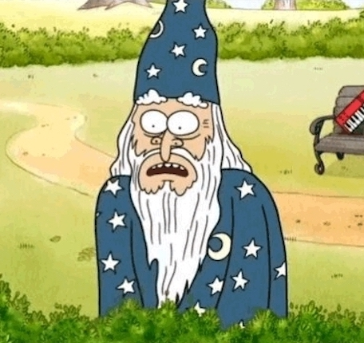
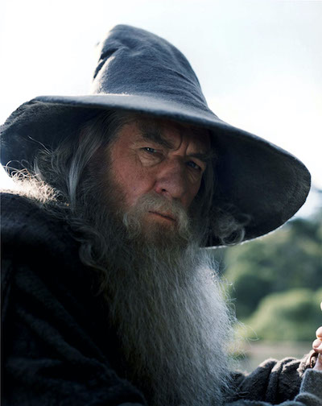
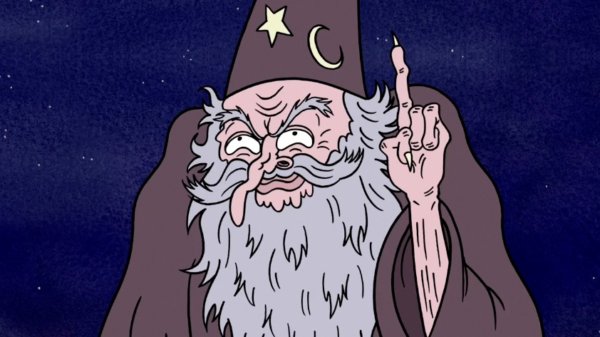
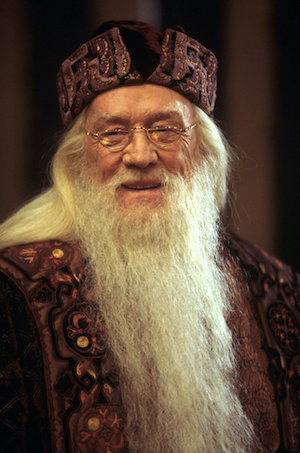

Keyboard Wizard
Origin: Regular Show
- Voice by Mark Hamil
- First appeared in S1E1, The Power
- Wizarding rank: Chairman Wizard
Keyboard wizard is tall with long with long white hair and a long white beard. He is wearing a long robe and a large hat with star and moon symbols etched on it. He also carries around a magical keyboard of immense power.

Gandalf
Origin: Lord of The Rings
- Played by Ian McKellen
- First appeared in Lord of The Rings The Fellowship of The Ring
- Wizarding rank: Master Wizard
Grey robes (later white), blue hat, grey scarf, black boots.

Halloween Wizard
Origin: Regular Show
- Voice by Mark Hamil
- First appeared in S3E4, Terror Tales of the Park Part 1
- Wizarding rank: Arch Wizard
He has a faded grey robe, a long scraggly grey beard, a mustache, brown sandals, and a wizard hat. He also has red eyes and, later in the episode, long fingernails.

Albus Dumbledore
Origin: Harry Potter
- Played by Richard Harris
- First appeared in Harry Potter and The Sorcerer's Stone
- Wizarding rank: Grand Wizard
Dumbledore's clothes often reflect his personality. He wears a tunic with long sleeves, a matching hat, shoes, and some rings as an accessory.
